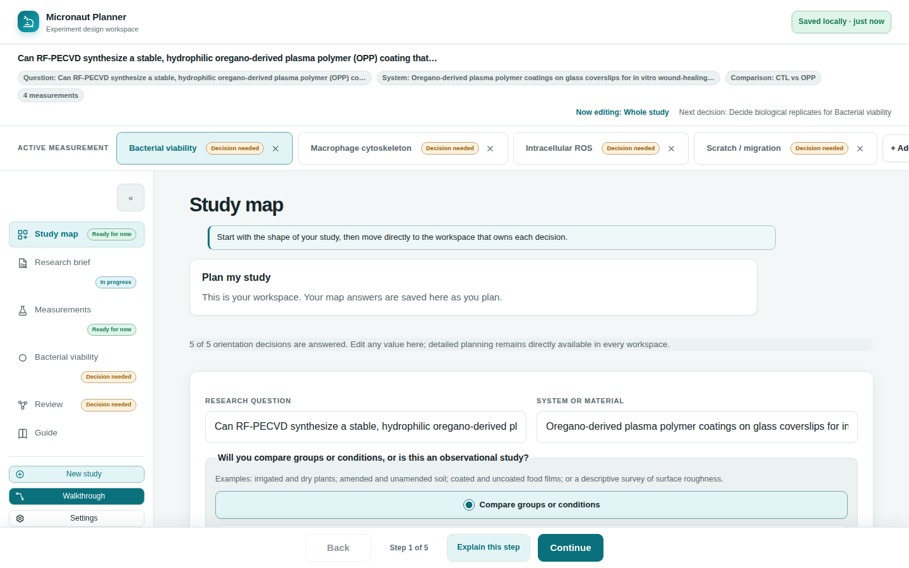

Chapter 3
The Study Map
Study map is home — the one screen that shows the shape of your whole study at a glance, and always knows what to ask you next.
What you'll be able to do
- Read the study map summary: question, system, comparison structure, and experimental unit
- Answer the map's orientation questions one at a time, or edit them directly in the summary
- Add and name measurements from the map itself
- Follow "Next decision" to the one thing most worth doing right now
- Recognize the workflow badges on the nav rail and the measurement pills, and what each state means
- Use the footer's Continue button to follow the same guidance without leaving the current page
Reading the study map
Study map is both the app's landing page and its first workspace. It shows four orientation facts about the whole study — the research question you're trying to answer, the system or material you're studying, whether you're comparing groups or conditions or running an observational study, and what counts as one independent experimental unit — plus a card per measurement showing its name and what it will observe.
The very first time you fill these in, the map asks them one at a time as a short intake — "What are you trying to find out?", then the system, then the comparison choice, then your first measurement's name and readout, then the experimental unit — with Back, Decide later, and Continue at each step. Once every orientation question has an answer (or you've explicitly deferred it with "Decide later"), the map switches to a single summary view: every field editable in place, with each measurement's own card below it and an "Add another measurement" form beneath those.

💡 Tip. "Decide later" doesn't lose your place — it just marks that question as deliberately deferred rather than missing, and moves on to the next one. You can always come back and answer it from the summary view.
Comparison mode and groups
The comparison question is a simple either/or: "Compare groups or conditions" or "Observational study." If you choose groups, the map shows a read-only summary of whatever group names are already in use across your measurements (for example "CTL vs OPP") — but it isn't where you type them. Groups are named exactly once, per measurement, on that measurement's own Samples & design section; Study map only reflects what's already there. See Measurements Registry and Conditions, Groups & Controls.
"Next decision" — one thing at a time
Below the summary, whenever anything about the study still needs attention, a Next decision card names exactly one thing worth doing right now — in plain language, with a reason ("The study map needs the question this work will answer," say) and a button carrying its own label straight to wherever that decision belongs. Micronaut works out this single next step from everything it knows about your study: which orientation questions are still open, whether each measurement has a name and a readout, whether a groups study's measurements actually have their groups defined, whether replicate counts and an acquisition method are set, and any outstanding conformance check from Review.
These aren't presented as a checklist to work through top to bottom — the app always resolves them to the single highest-priority one, so you're never asked to weigh several open questions against each other yourself.
🔍 Why it works this way. A study can have a dozen small gaps at once, and showing all of them together reads as a wall of homework. Naming one — the one that actually blocks the most progress — turns "here's everything wrong" into "here's what to do next," which is a much easier thing to act on.
Following Continue
The same "next decision" logic drives the Continue button in the footer at the bottom of every screen, not just the one on Study map's own card. When the study has an open decision that Continue can reach, its label changes to "Continue to next decision" and clicking it — from wherever you currently are — jumps straight to the right workspace, and to the right measurement if the decision belongs to one. If a decision names a different measurement than the one you're currently viewing, Continue switches the active measurement for you first.
Once nothing is left needing attention that Continue can reach, it reverts to its plain, linear meaning: moving forward through Study map → Research brief → Measurements → Measurement → Review in order (it's disabled at Review, the last step).
💡 Tip. If Continue is already sitting on the very decision it would otherwise send you to, it quietly falls back to the plain "move to the next workspace" behavior instead of sending you nowhere — so it never looks like it did nothing when you click it.
Workflow badges
Every step button in the nav rail carries a small colored badge naming that step's own current state:
| Badge | Meaning |
|---|---|
| Not started | Nothing has been entered for this step yet. |
| In progress | Some fields are filled in, but the step isn't finished. |
| Decision needed | Something here is open, or a planner check is unhappy — this is exactly the kind of thing "Next decision" and Continue surface for you. |
| Ready for now | Every check this step owns is currently satisfied. |
Every measurement pill in the switcher bar above the workspace also carries a badge, but a different vocabulary — it's the exact same headline status badge the Measurements registry shows for that measurement, read from the identical status record: one of Draft / Provisionally defined / Defined (has the measurement itself been filled in), Plan open / Needs a decision / Ready to acquire (does its plan still have an open decision), or Not checked / Blocked / Needs review / Checks pass (do its export checks pass). Because the pill and the registry row read the same record, they can never disagree — see Measurements Registry for the full three-axis breakdown.
⚠️ Careful. None of these badges — on a step or on a measurement pill — is ever a claim that the experiment is scientifically correct, adequately powered, or approved by anyone. Every one of them describes the plan's completeness against the app's own checks, nothing more.
Check yourself
You want to name your comparison groups — "irrigated" and "dry," say. Do you type them on Study map?
No. Study map only shows a read-only summary of whichever group names your measurements already use. Groups are typed once, per measurement, on that measurement's own Samples & design section.
You're on the Measurement page and click "Continue to next decision." Where does it take you?
Wherever the study's single highest-priority open decision actually is — a different workspace, and a different measurement if that's what the decision names, switching the active measurement for you automatically.
A measurement's switcher pill shows "Checks pass." Does that mean the experiment is scientifically sound?
No — the pill only ever shows the headline of the same three-axis status the Measurements registry shows (see Measurements Registry), and even "Checks pass" is a statement about the plan's completeness and its export checks, not a validation of the science.